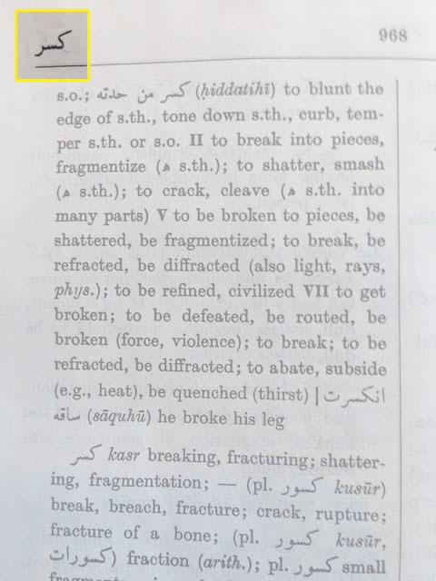
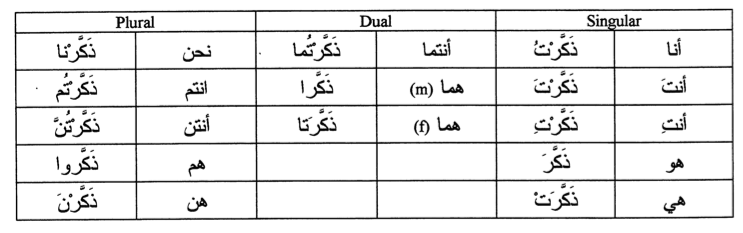
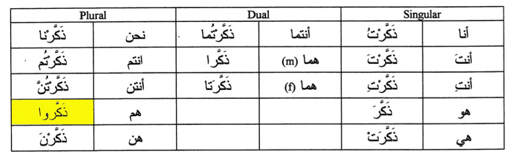

Rethinking
the Dictionary
Translations lack context
Meaning = Translation + Context
How to find the meaning of an Arabic Verb
- Find the three letter stem
- Deduce the measure from the conjugation
- Look up the word by stem and measure in a dictionary for context
- Apply context to current conjugation to form meaning
Verb Root [ k - s - r ]

تكسير
t-k-s-ee-r
Measure II - "to break into pieces"
Verbal Noun
something breaking into pieces
How to find the meaning of an Arabic Verb
- Find the three letter stem
- Deduce the measure from the conjugation
- Look up the word by stem and measure in a dictionary for context
- Apply context to current conjugation to form meaning
If you can stem a verb from it's conjugation
Why can't you conjugate a verb from it's stem?
Arabic Verb Conjugation Table

Arabic Verb Conjugation Table

Natural Language Processing
can make learning languages easier